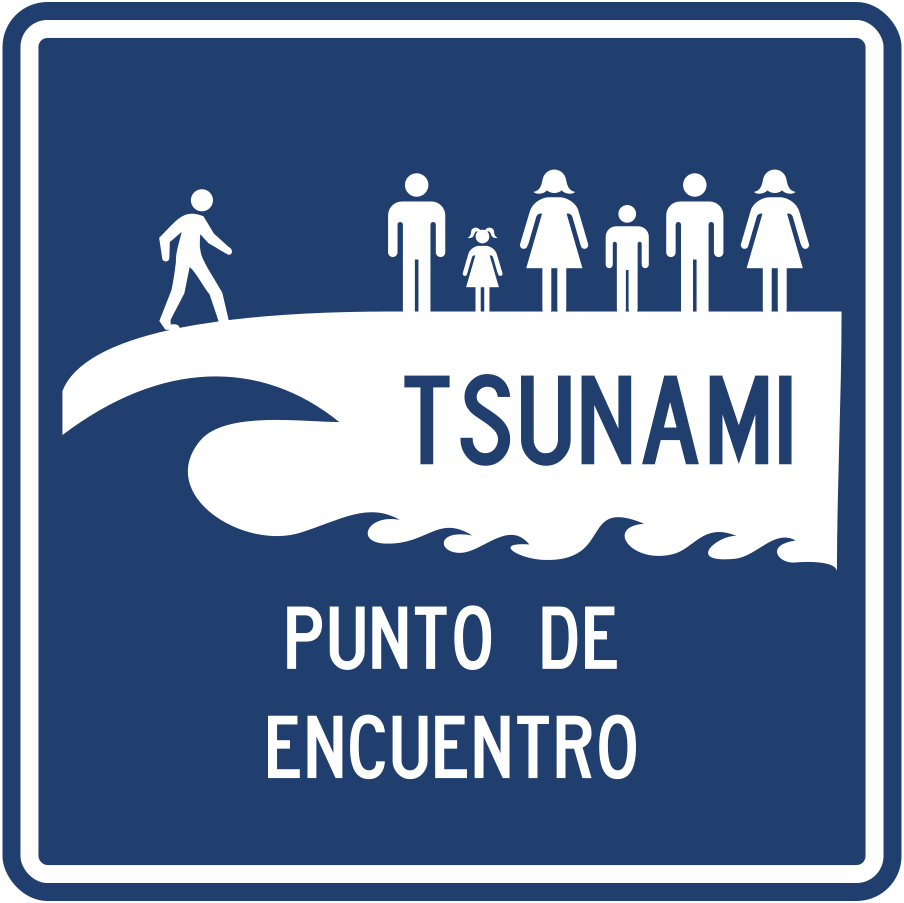
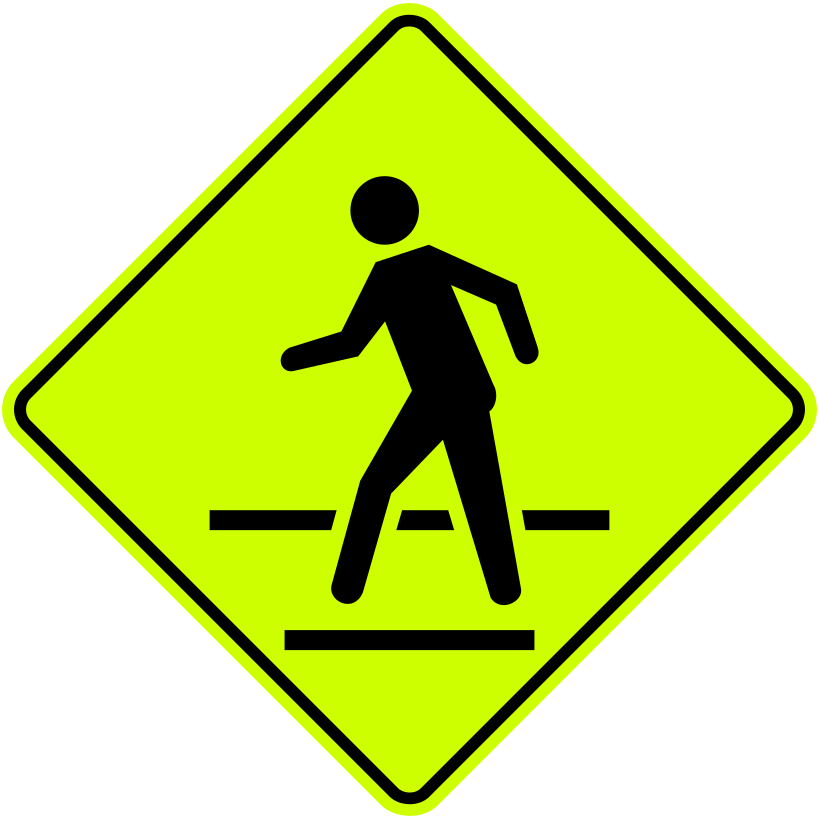
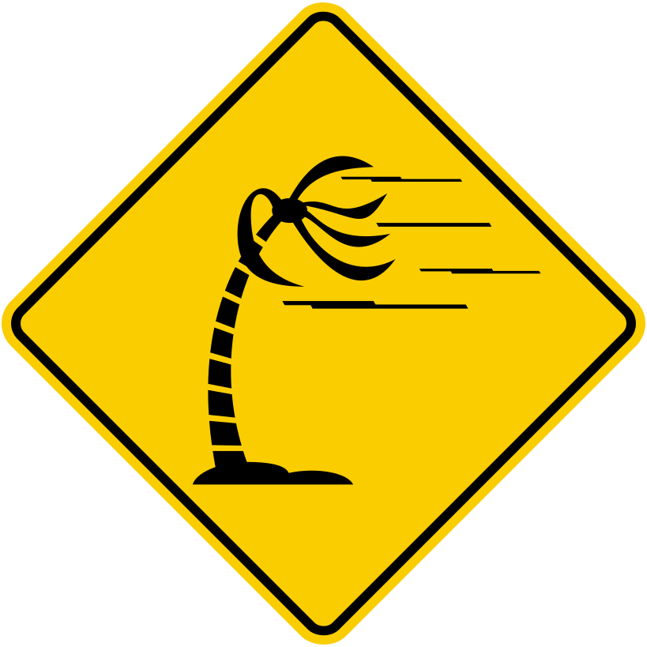
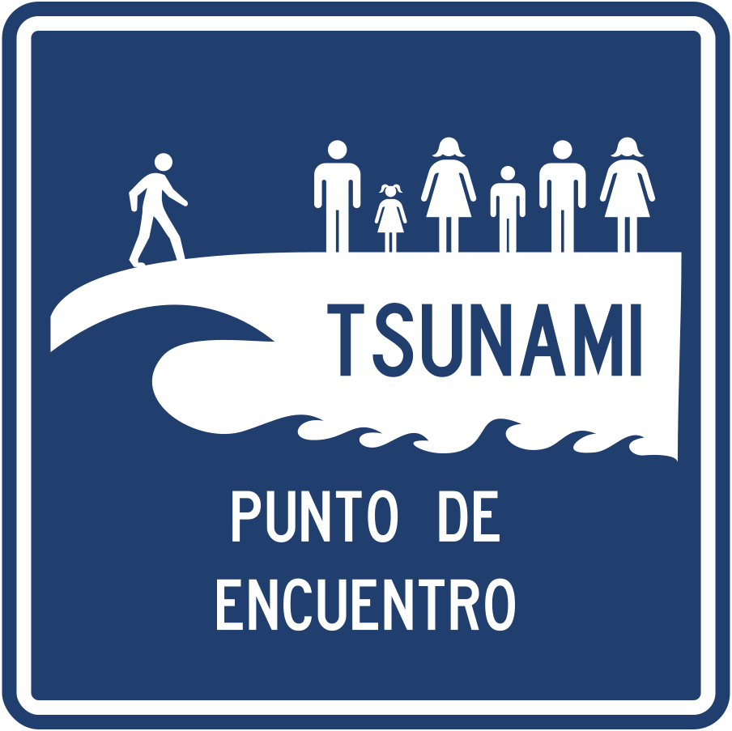
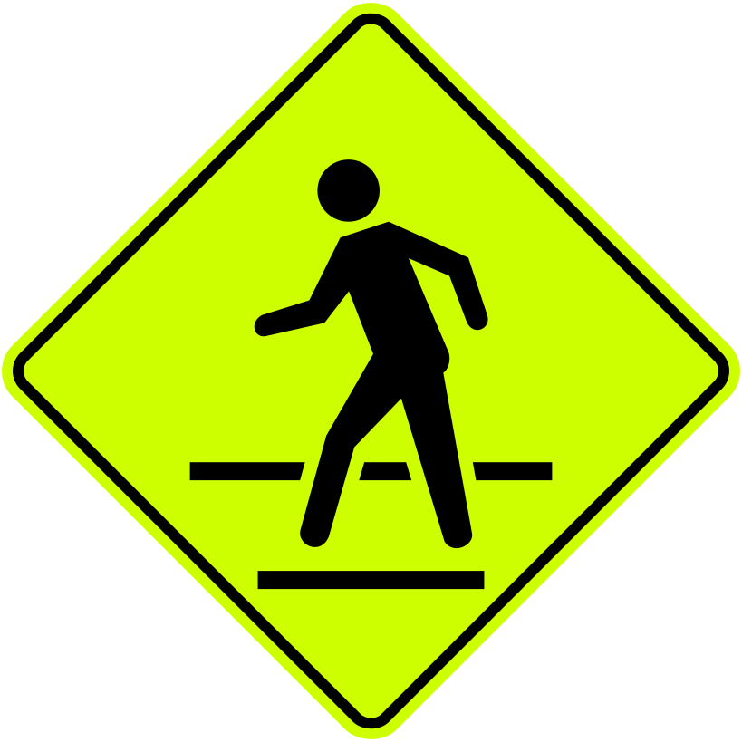
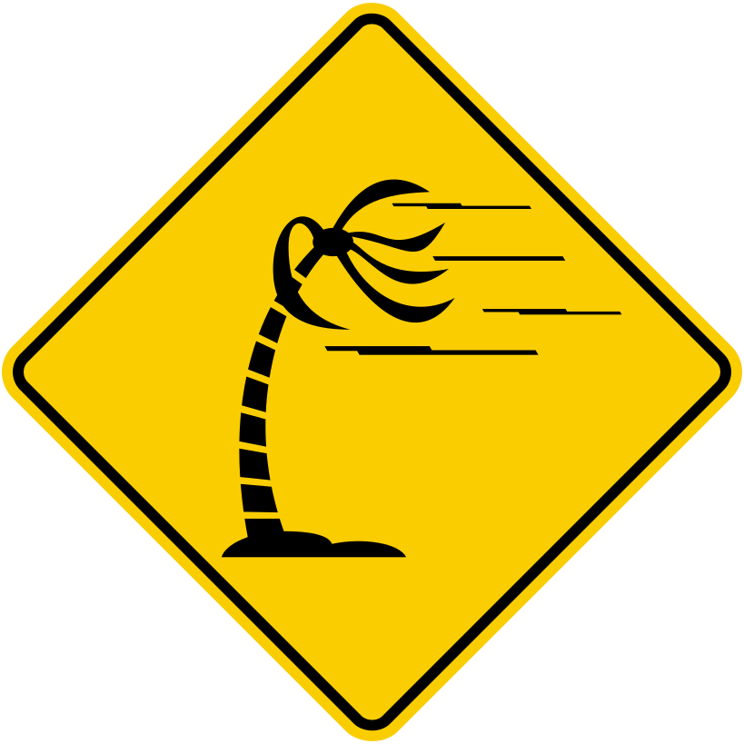
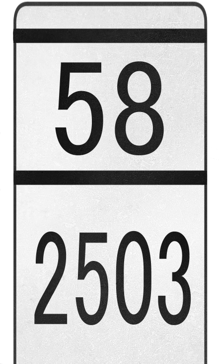
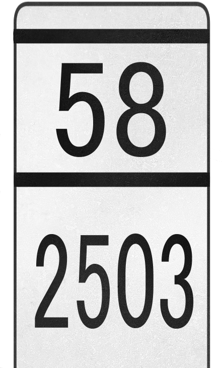

国・地域の見分け方
- ドメインは.co
- 言語はスペイン語
- 路側帯は白で中央線は黄色
- ナンバープレートは前後共に黄色
- 標識の背面にはクロスが存在する(by Geotips )
見つかる標識
 





 



州・地域の絞り込み
- 植生の分布
- メタ川流域～南東のエリア■ アマゾンに近くなり土も赤くなる
- 北東の内陸■ メタ川より北は栄養が少ない土壌 (参考文献 Meta River)。全体的に平坦でありサバンナのような地域もある。背の高い木は育たない 。
- 最北の海沿い■ 砂漠があるエリア
- 北の海沿い■ 白い砂が見えたり街中の道路の角に砂がたまっていることがある
アンデス東山脈の東側。平坦な土地が広がっていて、メタ川沿いは栄養が少ない土壌で植物も少ない。
下の図の東の平坦なエリアを指している
.svg#/media/File:Mapa_de_Colombia_(relieve).svg)
By Milenioscuro - Own workDemisInstituto Geográfico Agustín Codazzi - Mapa oficial de la República de ColombiaU.S. Department of State - Limits in the SeasBiblioteca Luis Ángel Arango - La territorialización del Mar CaribeArmada Nacional de Colombia - Tratados Limítrofes Marítimos de la República de Colombia, CC BY-SA 3.0, Link
砂漠に近い土壌が広がっている。
写真は恐らくバランキージャ周辺の道路 (参考文献 バランキージャ)。
農業
- 平坦な地域ならば農業をしているが平坦な地域が少ないので役に立つタイミングはそこまで多くない (参考文献 USDA - Northern South America - Crop Production Maps)

Valle del Cauca県周りの平坦なエリア 。コロンビアはサトウキビを用いたバイオエタノールの生産で有名であり、サトウキビの80%はValle del Cauca県産だ (参考文献 Colombia’s cane industry efficient but potentially damaging)。
- Buenaventuraへの道はコンテナを積んだトラックが多く見られる
- 電柱に黄色と黒のラインがあるとAntioquia県かも
- ボラードに道路番号が書かれている (参考文献 【GeoGuessr】気づきにくい道路番号を読み取る - 狐のいる神社-GeoGuessrとその他)
- サン・アンドレス・プロビデンシア・イ・サンタ・カタリーナ諸島はGoogle Carが特徴的
Buenaventuraはコロンビアの主要港でありコロンビアにおける海上輸出入の約60％を占めている。そのため港へ続く道はコンテナを積んだトラックが多い印象 。 ONEのコンテナも見つかる 。


都市・町の絞り込み
- タクシーやトラックの屋根または側面にサイドプレートがあり都市名が書いてある
- Tierra Bomba島のBocachicaという町を歩いている
- ブラジルと ペルーの国境付近にLeticiaという町がありGoogle Carが見える (参考文献 plonkit)
- Gorgona島を歩いている
- 他の町がら離れた場所にあるSanta Rosalíaという町にわずかにストリートビューがある
_02.jpg#/media/File:Fuerte_de_San_Fernando_Cartagena_(2009)_02.jpg)
By Zandcee - Own work, CC BY-SA 4.0, Link
陸路でつながっているブラジルのTabatingaと経済的な結び付きが強い (参考文献 Leticia)。電柱もブラジルにあるような仕切りのある電柱が見られる 。観光地として栄えておりタクシーや観光客が多く見つかる。特徴的なGoogle Carが見られる 。

By Sascha Grabow www.saschagrabow.com - Own work, CC BY-SA 3.0, Link

コメント欄